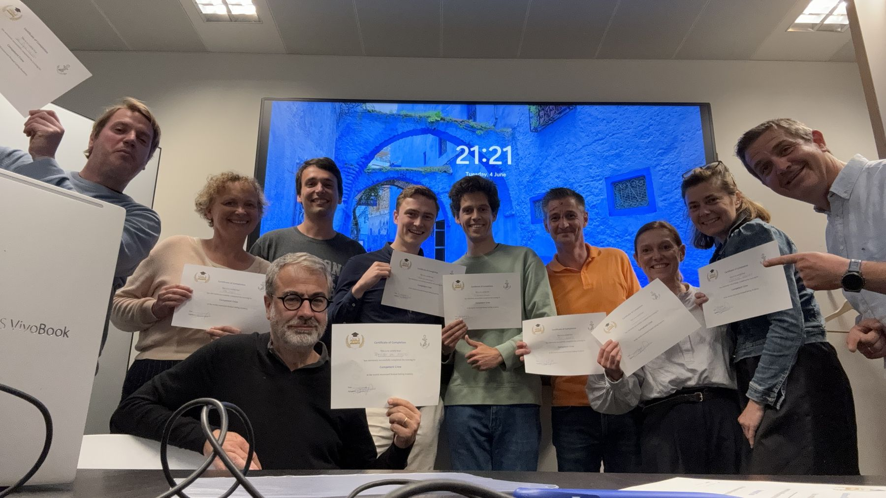
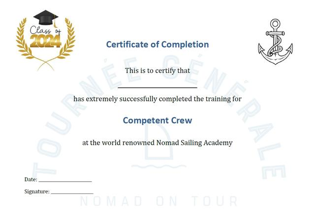

5 juni 2024
Zeiltraining: Check!
Niet iedereen van de crew heeft al dezelfde zeebenen en zeilkennis, vandaar hebben we op dinsdag 4 juni een gezellig onderonsje gedaan met een groep gemotiveerde, geïnteresseerde en voorbeeldige aspirant-eerste-stuurlui. Alle basics van een zeilboot / Nomad, koersen, wind, manoeuvers, knopen, crew-taken, safety, etcetera zijn aan bod gekomen tijdens een boeiende interactie in de kantoren van Moore Belgium (dank u voor de gastvrijheid!).

Een paar uur vol nuttige weetjes en intelligente vragen later beheerst iedereen de basics inclusief wat huiswerk om een paar essentiële knopen te (blijven) oefenen. Het felbegeerde "Competent Crew" diploma van de bekende Nomad Sailing Academy was dan ook dik verdiend en krijgt bij iedereen ongewtijfeld een gepast ereplaatsje 😉.
Pro memorie, of voor de afwezigen die nog één en ander willen heropfrissen, hierbij de link naar de slide deck.